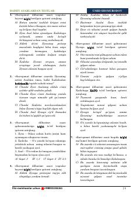

SDChingiz Aytmatovning «Sarvqomat dilbarim» asari bo'yicha testlar to'plami.
Ushbu qo'llanma Chingiz Aytmatovning «Sarvqomat dilbarim» asari bo'yicha tuzilgan test savollarini o'z ichiga oladi. Testlar asar qahramonlari, voqealar rivoji va badiiy tahlilga oid bilimlarni mustahkamlashga yordam beradi.